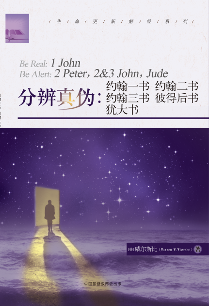

欢迎您访问！
加入收藏
设为首页
联系我们
简体版
繁体版
English
旧版
登录
注册
手机版
APP下载
微信
首页
全国两会
人员组成
部门设置
政策法规
重要文件
规章制度
神学思想建设
新闻动态
本会动态
海外交流
教会活动
时事关注
院校事工
各地教会
教堂风采
神学院校
各地两会
社会服务
社服新闻
项目事工
义工注册
天风在线
天风杂志
信仰教义
灵修语丝
讲章精选
大公信经
新教经典
异端辨析
教义简介
圣经APP
圣经下载
视频音像
新闻视频
讲道视频
活动专题
网站公告：
2020年中国基督教两会出国留学考试通知
2020-09-28
金陵协和神学院2021年硕士研究生招生简章
2020-09-02
金陵协和神学院2021年本科招生简章
2020-09-02
安徽神学院2020年公开招聘教师公告
2020-08-13
关于组织开展纪念中国人民抗日战争暨世界反法西斯战争胜利75周年和平祈祷活动的通知
2020-07-31
征文启事
2020-06-08
2020《天风》读者调查问卷
2020-06-02
捍卫真道 抵制异端 反对邪教
2020-03-17
世界基督教教会联合会第11届大会征稿启事
2019-12-03
“致敬创刊 70 年”——《天风》光荣获誉
2019-08-21
搜索
《基督教爱国主义教程》修订暨培训会议在华东神学院召开
坚持中国化方向， 弘扬爱国爱教传统， 办好新时代的中国教会
坚持中国化方向，弘扬爱国爱教传统，办好新时代的中国教会
“教会灯台·荣神益人”
【综合】各地基督教会举行纪念中国人民抗日战争暨世界反法西斯战争胜利75周年和平祈祷活动（九）
基督教全国两会开展爱国主义教育活动
今年正值中国基督教发起三自爱国运动70周年，为加强爱国主义教育，更好地传承和发扬基督教爱国爱教的优良传统，近期，基督教全国两会组织同工分批前往上海崇明开展爱国主义教育活动。同工们参...
今日推荐
与时俱进 推进新时代特色神学教育
咸宁市基督教荣获抗疫“先进单位”和“先进个人”称号
坚立真理根基 建设和谐教会
聚焦新蓝图 奋进新征程
研读国学经典，推进中华优秀传统文化进校园
新闻动态
本会动态
海外交流
教会活动
时事关注
院校事工
更多
基督教全国两会开展爱国主义教育活动
2020-11-25
推进我国基督教中国化务虚座谈会在沪举行
2020-11-19
基督教全国两会牧长看望慰问在京学习的第十五期爱国宗教人士研修班和第五届爱国宗教人士硕士研究生班基督教界学员
2020-11-15
担负时代使命 书写教会故事
2020-11-14
迎挑战 谋融合——本届传媒事工委员会第二次会议在厦门召开
2020-11-10
澳门基督教界代表人士访问团访问广东省基督教两会
2020-11-20
海外教会及团体致函关心、支持中国抗击新冠肺炎疫情
2020-02-22
骨肉之亲 同忧共患 祈祷守望
2020-02-02
加拿大联合教会访问团一行到访陕西省基督教两会
2019-12-03
美国葛培理布道团来川访问四川教会
2019-11-22
韶关市基督教三自爱国会举办“基督教中国化”《广东省宗教事务条例》专题讲座
2020-11-26
哈尔滨市基督教两会举办学习贯彻《宗教团体管理办法》座谈交流会
2020-11-26
陕西省基督教两会赴安康市基督教会开展调研工作
2020-11-26
咸宁市基督教荣获抗疫“先进单位”和“先进个人”称号
2020-11-26
湖北省基督教两会举办全省中青年教职人员培训班
2020-11-26
国家宗教事务局关于《中华人民共和国境内外国人宗教活动管理规定实施细则（修订征求意见稿）》公开征求意见的通知
2020-11-21
国家宗教事务局关于《宗教教职人员管理办法（征求意见稿）》公开征求意见的通知
2020-11-21
《中国日报》评论：一个以基督徒包装的虚伪政客
2020-06-28
国务院通知：暂不开展聚集性宗教活动
2020-04-09
国家宗教事务局致天主教、基督教界的节日贺信
2020-04-09
与时俱进 推进新时代特色神学教育
2020-11-26
情洒东北神学院——辽宁各地教会向东北神学院献爱心
2020-11-24
聚焦新蓝图 奋进新征程
2020-11-23
研读国学经典，推进中华优秀传统文化进校园
2020-11-23
华东神学院教师学习党的十九届五中全会精神
2020-11-20
小工具
问卷调查
在线留言
圣经阅读
圣经下载
全国两会
更多
人员组成
部门设置
重要文件
规章制度
神学思想建设
社会服务
社服新闻
项目事工
更多
基督教全国两会本届社会服务事工专委会召开视频会议
2020-11-13
阚保平牧师、沈学彬牧师赴福建省南平市及泉州市考察调研社会服务项目
2020-11-02
沈学彬牧师赴安徽省安庆市考察长江洪水灾后援助项目
2020-08-20
阚保平牧师赴江西省铅山县考察洪灾灾后重建项目
2020-08-19
抗击疫情，有爱就会赢——基督教全国两会助力新疆防疫行动
2020-08-11
基督教全国两会“周婆婆”爱心餐计划
基督教全国两会社会服务能力培训
基督教全国两会养老服务研讨会
基督教全国两会“聚爱助行”计划
基督教全国两会“甘露“助学计划
基督教全国两会“周婆婆”爱心餐计划
基督教全国两会社会服务能力培训
基督教全国两会养老服务研讨会
基督教全国两会“聚爱助行”计划
基督教全国两会“甘露“助学计划
信仰教义
起底邪教之五：洗脑策略
4279
2020-06-08
起底邪教之四：洗脑方法
起底邪教之三：洗脑内容
起底邪教之二：洗脑条件
视频音像
汪洋出席宗教团体负责人迎春座谈会
2020-01-22
漫解识别门徒会七法
2019-12-27
热点视频
汪洋会见中国基督教第十次代表会议代表
2018-12-02
热点视频
中国基督教第十次代表会议在京隆重开幕
11月的首都，含苞腊梅静待绽放。在充满宁静和喜悦的氛围中，中国基督教第十次代表会议于28日上午在京隆重开幕。来自全国30个省、自治区、直辖市的300多名代表参加会议。
2018-11-28
热点视频
视频传递代表心声之期待篇
视频传递代表心声之期待篇
2018-11-28
热点视频
天风杂志
《天风》2017年第拾贰期
在线阅读
《天风》2017年第拾壹期
在线阅读
《天风》2017年第拾期
在线阅读
查看更多
书籍推荐

分辨真伪：约翰一书、约翰二书等
本书对《约翰一书》和《约翰二书》《约翰三书》《彼得后书》《犹大书》五卷圣经的释义。
21965
自由丰盛：加拉太书、以弗所书
忠心侍主：提摩太前后书、提多书、腓利门书
智勇兼备：哥林多前后书
123
15510
研修本（真皮版）
成长盼望：雅各书、彼得前书
查看更多
各地教会
教堂风采
神学院校
各地两会
更多
上海沐恩堂
沐恩堂位于黄浦区西藏中路316号。原名“慕尔堂”，前身之一为“三一堂”，始建于清同治十三年（1874年），由美国监理会传教士蓝柏在法租界郑家木桥（今福建中路延安东路附近）建造。光绪十三年（1887年），传教士李德另在今云南中路汉口路建造“监理会堂”。光绪十六年（1890年），改名“慕尔堂”，以纪念美国堪萨斯州捐款人慕尔去世的女儿。20世纪20年代末，筹款重建新堂，并请著名建筑师邬达克设计。
上海国际礼拜堂
国际礼拜堂位于上海市徐汇区衡山路53号，建成于1925年，为当时上海最大的基督教堂。整幢建筑呈“L”形，近代哥德式的砖木结构，呈英国民间乡村建筑风格，屋顶呈交叉木屋架。大门朝北，两边设尖拱长廊，窗框为弧拱形，镶嵌梅花纹玻璃。大堂正中为祭台，两侧为二层廊式楼厅。堂的左侧为3层楼房，底层为牧师办公室，三楼是小礼堂。国际礼拜堂占地7300平方米，建筑面积1372平方米，堂内可容纳700余位信徒聚会。1989年9月，国际礼拜堂被上海市政府列为第一批“上海市文物保护单位”。
上海鸿德堂
位于上海多伦路59号的上海基督教鸿德堂建成于1928年，是由美国北长老会资助与我国信徒捐资共同建造的，堂名就是为了纪念该会的著名传教士、上海美华书馆负责人之一费启鸿（George F. Fitch, 1845-1923 ）。当时正逢我国民族主义高涨，基督教界亦提倡本土化，因此教堂设计打破传统的西方建筑式样，屋顶采用中国传统的斗拱飞檐结构。
大连市中山区玉光街基督教礼拜堂
玉光堂属于基督新教，全名为“大连市中山区玉光街基督教礼拜堂”，座落于大连市中山区玉光街2号。教堂建筑为哥特式的建造风格。
金陵协和神学院
金陵协和神学院是中国基督教的全国性神学院校，前身始于1911年的金陵神学院及其后的金陵女子神学院，在此基础上，1952年11月，与华东地区其它10所神学院校联合，取意“协和”，形成今天的校名：金陵协和神学院（NanJing Union Theological Seminary）,首任院长丁光训主教。
燕京神学院
燕京神学院于1986年成立，由华北、西北包括北京、天津、河北、山西、内蒙古、陕西、甘肃、宁夏、青海、新疆十个省、市、自治区“两会”联合办学，是中国基督教五大区域性学院之一，也是首都唯一的一所基督新教的神学院。
华东神学院
华东神学院由华东地区四省一市（山东、浙江、江西、福建和上海）基督教两会于1985年联合创办，旨在为教会培养灵、德、智、体、群、美全面发展的教牧人才。
广东协和神学院
广东协和神学院前身是广州协和神学院(Canton Union Theological College)，广州协和神学院创立于1914年，由美国长老会、加拿大长老会、新西兰长老会、英国伦敦会、美国公理会、美国同寅会、英国圣公会及英国循道会八个差会,以及中华基督教会广东协会、中华圣公会华南教区和中华基督教循道公会华南教区三大公会，先后加入，联合兴办，故取"协和"（Union）之意。
山东省基督教两会
山东省基督教两会指的是：山东省基督教三自爱国运动委员会和山东省基督教协会。
北京市基督教两会
北京市基督教三自爱国运动委员会（The Beijing Committee of Three-self Patriotic Movement of the Protestant Church）和北京市基督教教务委员会（Beijing Christian Council）简称北京市基督教“两会”。
河南省基督教两会
基督教社会团体组织，与河南省基督教协会是分工合作的关系，系河南省基督徒的全省性群众组织，基督教全省会议是该会最高机构。
陕西省基督教两会
陕西省基督教三自爱国运动委员会成立于1958年，系陕西省基督徒的全省性爱国爱教组织，其宗旨是：团结全省基督徒，拥护中国共产党和人民政府的领导，热爱社会主义祖国；遵守国家宪法、法律、法规和政策，树立良好社会道德风尚，积极带领信徒爱国爱教，荣神益人；坚持独立自主自办原则，增强团结，为办好陕西教会提供服务，引导全省基督徒为构建社会主义和谐社会发挥积极作用，使陕西基督教与社会主义社会相适应。
友情链接
中央统战部
国家宗教事务局
中国反邪教网
中华基督教青年会、女青年会全国协会
金陵协和神学院
燕京神学院
华东神学院
云南神学院
广东协和神学院
广西基督教两会
陕西省基督教两会
浙江省基督教两会
河南省基督教两会
北京市基督教两会
广东省基督教两会
湖北省基督教两会
四川省基督教两会
内蒙古基督教两会
辽宁省基督教两会
山东省基督教两会
山西省基督教两会
福建省基督教两会

 手机版
手机版

 APP下载
APP下载
 微信
手机版
APP下载
微信
微信
手机版
APP下载
微信